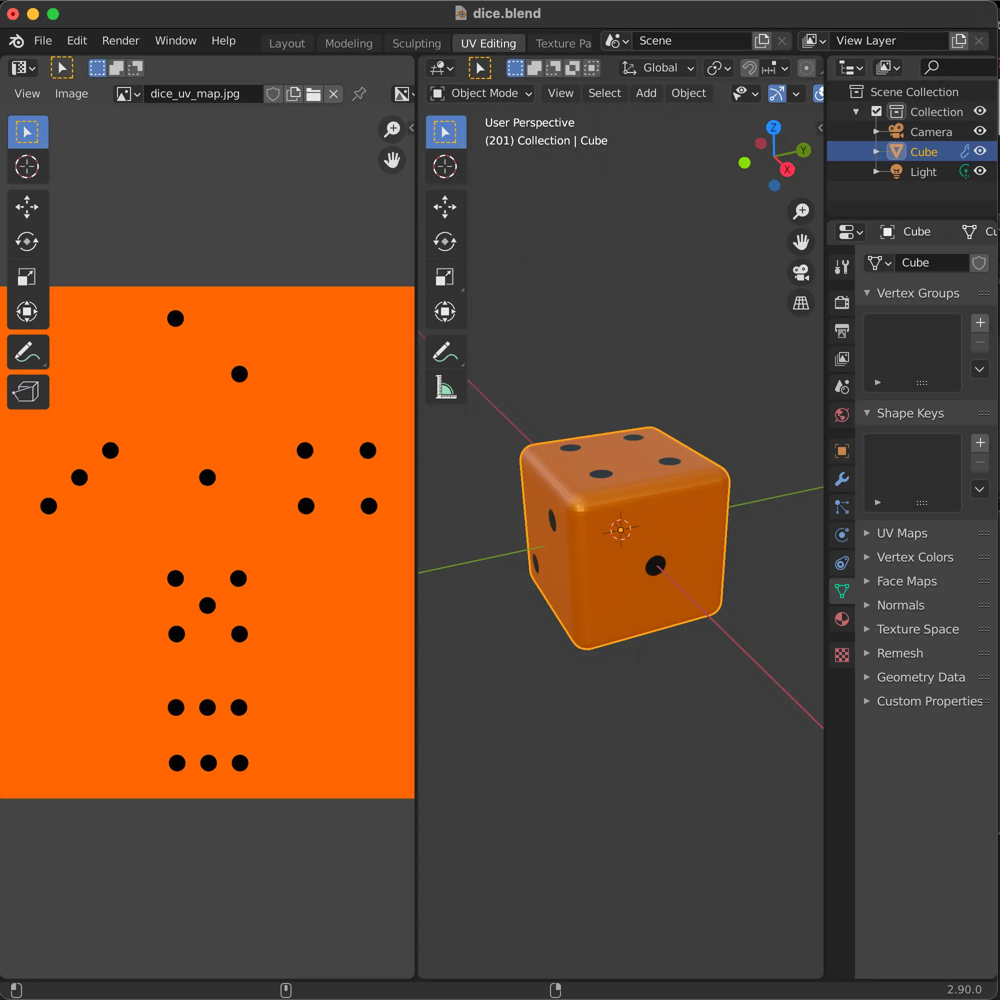
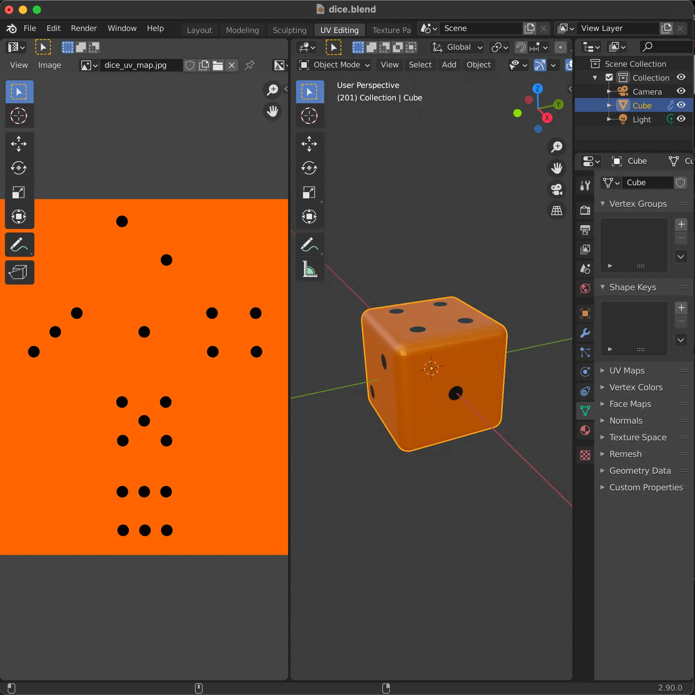

Rolling dice virtually is not the same experience as rolling dice physically. It just doesn't feel real. The dice do not appear to tumble or make sounds. This disconnected experience makes one suspect that maybe these on-line dice are not really random.
It would be great to recreate the experience of actually rolling dice in the browser. It would be reminiscent of marathon Monopoly with your friends. It would be like Vegas baby!
In this article I introduce a gamified micro-interaction in which dice are rolled virtually by shaking the phone. The sensation is complete with haptic and audio feedback making it seem like the bones are rattling in your sweaty palm. The mathematical integrity of the roll result is achieved through the high entropy of the Web Crypto API.
"Why?", you might and should ask. I prefer to answer the "Why" in terms of business value.
The PWA proposition: It is not uncommon for startups to develop a web app, an iPhone app, and an Android app. When management is convinced that a web app can be just as engaging as native they will decide to focus solely on the web app and get to market much quicker (PWA=MVP). Making a web app installable results in increased traffic, visitor retention, sales per customer, and conversions. I believe that this project proves beyond doubt the immersive potential of browser APIs.
The argument for Gamification: Framing a customer touch-point as a playful game has the potential to differentiate, engage, and persuade like nothing else.
Professional Branding: I am doing this because it allows me to integrate emerging browser APIs in such a way that I have a slick deliverable to demonstrate when I am done.
 
